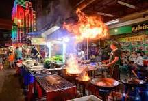

Our Story
Inspired by the colors, aromas, and stories from the streets of Accra to Tamale, this site brings you closer to the heart of Ghanaian street food. What began as a school project has grown into a passion to preserve and promote our culinary identity.
